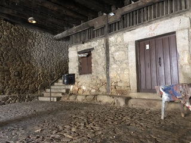

⛲ Fuente y Portalón
üéµ
Pausar Música
Verifica tu ubicación
Acércate a la fuente y al portalón para continuar.
Verificar GPS
O escribe el nombre:
Verificar Manual
Portalón:
Lugar renacentista de reunión y comercio. Aún conserva inscripciones originales.
Más info
Fuente:
De dos caños con decoración geométrica, construida en el siglo XVI.
Más info

Interior:
Perspectiva del portalón y sus detalles, evocando tiempos pasados.
Más info
❮
❯